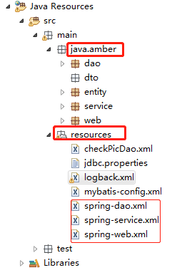
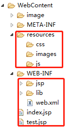
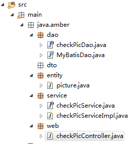

这几天尝试搭建了一下SSM框架，多部分是参考的博客：https://github.com/liyifeng1994/ssm。
写这篇博客的目的是记录一下，以防自己以后忘记，以及给以后学习作为一个参考。
工程结构图
一般情况下工程的结构图大致如下图所示：


其中，java.amber下面放的是主要的Java代码，它下面又分为三大层（web层，service层，dao层）和实体类entity；
resources下面放的是一系列配置文件和mapper的映射文件。
WebContent目录下resources文件夹可以存放css、image、js等静态资源，WEB-INF下包含jsp文件夹(可以存放jsp网页)和web.xml（整个web应用的全局配置文件）。
框架搭建
由于我没有使用maven，所以直接将所有的jar包导入了WEB-INF下的lib文件夹中。下面开始搭建。
- dao层
在resources文件夹下新建spring-dao.xml文件，如下配置：
1 | <?xml version="1.0" encoding="UTF-8"?> |
其中涉及到数据库相关配置参数文件：jdbc.properties
1 | jdbc.type=mysql |
参数信息根据情况可自行修改，其中dbsampler是数据库名，3306是端口号
还有一个文件是mybatis 的核心配置文件：mybatis-config.xml
1 | <?xml version="1.0" encoding="UTF-8"?> |
这里要注意在spring-dao.xml中引用其他两个配置文件时的路径，如果路径配置不对，会出现很多乱七八糟的小问题。
- service层
在resources文件夹下新建spring-service.xml文件
1 | <?xml version="1.0" encoding="UTF-8"?> |
- web层
同理，在resources文件夹下新建spring-web.xml文件：
1 | <?xml version="1.0" encoding="UTF-8"?> |
- web.xml
最后修改web.xml文件：
1 | <?xml version="1.0" encoding="UTF-8"?> |
- 日志配置文件logback.xml
1 | <?xml version="1.0" encoding="UTF-8"?> |
这样基本的配置文件就完成了。下面写一下从数据库查询图片的业务。
查询功能实现
在三大层和实体分别建立相应文件如下：

首先建立数据库和表，然后在entity文件夹下新建picture.java：
1 | package main.java.amber.entity; |
可以在web-content目录下新建一个index.jsp页面作为首页：
1 | <%@ page language="java" contentType="text/html; charset=UTF-8" |
a标签的href属性指向一个controller，也就是checkPicController.java:
1 | package main.java.amber.web; |
执行完controller方法后会返回一个picturelist.jsp作为结果显示页面。该jsp的位置在WEB-INF/jsp/picturelist.jsp下面。
picturelist.jsp
1 | <%@ page language="java" contentType="text/html; charset=UTF-8" |
在controller方法内会调用service层方法，service层分别建立了一个接口checkPicService.java和一个接口实现类checkPicServiceImpl.java。
checkPicService.java
1 | package main.java.amber.service; |
heckPicServiceImpl.java
1 | package main.java.amber.service; |
这里使用mapper代理方法操作数据库，所以dao层只需要写一个接口checkPicDao.java，这样接口+mapper映射文件就可以实现功能。
checkPicDao.java
1 | package main.java.amber.dao; |
在resources文件夹下新建mapper映射文件checkPicDao.xml:
1 | <?xml version="1.0" encoding="UTF-8"?> |
这里注意mapper的“namespace”要指向“接口”的路径，“id”要与“接口方法名”一致，这样才能完成自动映射。